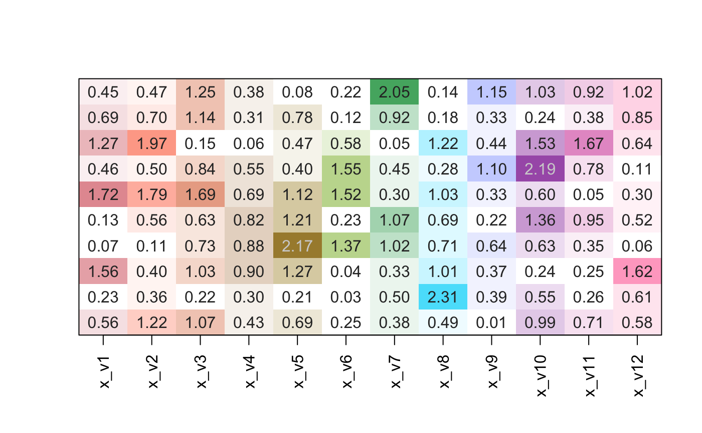

Convert numeric matrix to heatmap colors
matrix2heatColors(x, colorV = group2colors(colnames(x)), defaultBaseColor = "#FFFFFF", transformFunc = c, lens = 0, shareLimit = TRUE, numLimitFactor = 0.95, numLimit = NULL, baseline = 0, divergent = FALSE, rampN = 15, verbose = FALSE, ...)
| x | numeric matrix. If there are no |
|---|---|
| colorV | character vector of R colors, named by |
| defaultBaseColor | character vector of R colors used as the default
base color, when |
| transformFunc | function applied to numeric values before
the color gradient is mapped to numeric values. For example,
|
| lens | numeric value passed to |
| shareLimit | logical indicating whether one numeric limit |
| numLimitFactor | when |
| numLimit | numeric value to define the maximum numeric value
above which all numeric values are mapped to the maximum color.
When set to |
| baseline | numeric value to define the numeric baseline, used
when |
| divergent | logical indicating whether to apply colors to the numeric range symmetric around zero. |
| rampN | integer value to define the number of color breaks for each color gradient. |
| verbose | logical indicating whether to print verbose output. |
| ... | additional arguments are ignored. |
This function is intended as a rapid way of applying a color
gradient to columns of numeric values, where each column
has its own base color. It calls jamba::getColorRamp()
for each column, and when supplied with one color, it
creates a color gradient from "grey95" to the output
of jamba::color2gradient().
When lens is non-zero, the color gradient is warped in order
to intensify the color saturation across the numeric range.
Other jam color functions: closestRcolor,
group2colors, jam_pal,
rainbowJam, scale_color_jam,
scale_fill_jam, theme_jam,
vals2colorLevels
set.seed(123); # generate a random numeric matrix m1 <- matrix(ncol=12, rnorm(120)); m1n <- m1; m1n[] <- format(round(abs(m1), digits=2), trim=TRUE); jamba::imageByColors( matrix2heatColors(abs(m1), transformFunc=c, divergent=FALSE, lens=-5, shareNumLimit=TRUE, baseline=0, numLimit=4), cellnote=m1n);